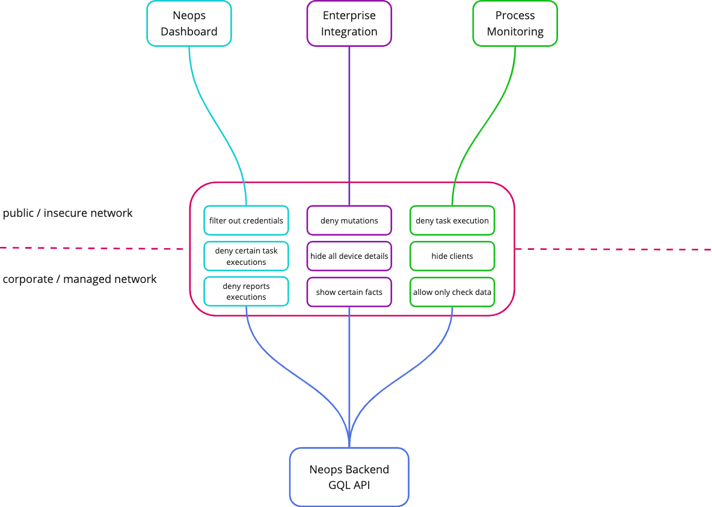

Neops Secure Graphql Gateway
Description
This is a GraphQL gateway for the Neops project. It is a gateway and Webapplication Firewall that provides a single endpoint for all the services in the Neops project. It is built using NestJS and Apollo Server.
Concepts
Role in the Neops Eco-System
The gateway acts as a single endpoint for all the Graphql Operations of a running Neops Backend Graphql API. It can be used to transform the schema that is served to the client, as well as to modify the data that is served to the client. This can be used to filter out sensitive data, or to restrict the operations that the client can perform. Typically it is used to expose / restrict the Graphql API from a secure network to an insecure network.
Big Picture

Features
Context of all features is the gateway acting as endpoint for all Graphql Operations within insecure networks to prevent 3rd party systems of accessing sensitive data, start processes and run reports or accessing device credentials.
Schema transformation
Having the ability to transform the schema that is served to the client, allows to restrict the operations that the client can perform.
A Graphql Operation is a query, mutation or subscription. The schema transformation can be used to allow or deny specific operations. It is possible to configure a list of allowed and denied operations. If a operation is allowed, all other operations are denied. If a operation is denied, all other operations are allowed.
See below for an example configuration.
Data transformation / Resolvers
Schema Transformations modify the schema that is served to the client. Resolvers affect the data that is served to the client during runtime of the Graphql Operation. This can be used to filter out sensitive data, or to restrict the operations that the client can perform according to configured rules.
See below for an example configuration.
Task and Report filtering
To ensure certain Tasks or Export can not be called, the gateway can be configured to allow or deny specific tasks and reports. Reports / Task filters are a specialized form of the Resolvers and act during runtime of the Graphql Operation and permit or deny the execution of specific tasks or reports the client is requesting to do so.
Installation
Dependency update
Running the app
# development with debugger
$ npm run start:debug
# watch mode
$ npm run start:dev
# production mode
$ npm run start:prod
Test
configuration
Environment variables
Ensure to set the following environment variables (the values here are just examples) for the environemnt you are running the gateway in:
PORT=1234
PATH_TO_RULES=config/example-rules.json
GRAPHQL_ENDPOINT_NEOPS=http://localhost:8000/graphql
STATIC_AUTH_TOKEN="Bearer your-static-token"
Configuration Rules
check the example file under config/example-rules.json to see how to configure the rules for the gateway.
To modify/transform the schema itself prior to serve the graphql endpoint, one can allow or deny certain operations. This directly modifies the schema which will be served to accessing clients.
operationAllow will allow the execution of specific operations by the client and deny all others. An empty list, will ALLOW all operations.
operationDeny will deny the execution of specific operations by the client.
Example:
{
"transformers": {
"operationAllow": [],
"operationDeny": [
{ "operationName": "Query", "fieldName": "interfacesElastic" }
]
}
}
Configuring resolvers gives ou access to the data that is served by the gateway.
valueErasers will remove the value (set to null) of a field from the response. This is useful for sensitive data that should not be exposed to the client.
jsonData will allow or deny the population of specific json attributes of a specific field in the response.
tasksAllow will allow the execution of specific tasks by the client and deny all others. An empty list, will DENY all tasks.
tasksDeny will deny the execution of specific tasks by the client.
reportsAllow will allow the execution of specific reports by the client and deny all others. An empty list, will DENY all reports.
reportsDeny will deny the execution of specific reports by the client.
Example:
{
"resolvers": {
"valueErasers": [
{
"fieldName": "username",
"typeName": "DeviceType"
},
{
"fieldName": "hostname",
"typeName": "DeviceType"
}
],
"jsonData": [
{
"typeName": "DeviceType",
"fieldName": "facts",
"allow": null,
"deny": ["foo.bar"]
}
],
"tasksAllow": [
{
"uniqueName": "testmail"
}
],
"tasksDeny": [],
"reportsAllow": [
{
"uniqueName": "super.awesome.report"
}
],
"reportsDeny": [
{
"uniqueName": "super.awesome.report"
}
]
}
}
to use the rules then in a docker container, you need to mount the file to the container: